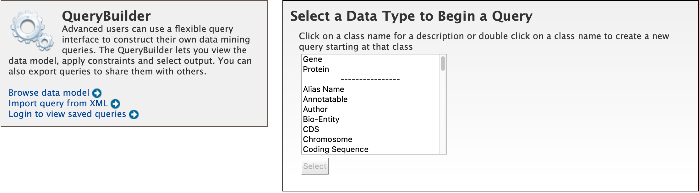

Searching in HymenopteraMine
There are several ways that users may query HymenopteraMine.
Quick Search
The Quick Search enables users to search keywords from any of the datasets on HymenopteraMine. The quick search box is located on the main page and in the upper-right corner of each page.
{kind=link}
Quick Search from home page
{kind=link}
Quick Search from any page
Users may enter gene names, gene identifiers, or keywords to search for within HymenopteraMine. The wildcard character * may be used to get all results matching the search query.
As an example, to search on the gene LCCH3, enter LCCH3 into the quick search box and click Search. The results page displays a summary for the query in a tabular format.
{kind=link}
Example: Search results for LCCH3
The search results may be filtered by Category or Organism. The score column in the result table indicates the similarity of the query to the result fetched by HymenopteraMine.
The results page may also be converted to a list. To enable this feature, click on Gene in Hits by Category. Select the gene(s) to be included in the list, and click on the Create List button just above the table of search results. Lists are described in more detail in the Lists section.

Example: Search results restricted to Gene category
Templates
Another method of searching HymenopteraMine is through the use of templates (predefined queries). Popular templates are displayed on the home page, grouped by category (Genes, Protein, Homology, etc.) The full list of templates may be viewed by clicking the Templates menu tab.
{kind=link}
Popular templates
{kind=link}
List of templates on the Templates page
As an example, the GO Term ⮕ Gene template queries HymenopteraMine for all genes annotated with a given GO term for a selected organism.
{kind=link}
Example: GO Term ⮕ Gene template
The results page shows all A. cephalotes genes having the Gene Ontology term “DNA Binding” (GO:0003677) in their annotation. When logged in, users may create a new list or add these genes to an existing list to perform further analyses. Click on the Save as List button above the table of results, then choose the column to add to the list. See the Lists section for more details on creating and saving lists.
{kind=link}
Example: Results after searching on GO:0003677 (identifier for GO term “DNA binding”)
Generate query code
The code for each query may be obtained by clicking on the arrow next to Generate Python Code and choosing the desired language from the pull-down menu. The language options are Python, Perl, Java, Ruby, JavaScript, and XML.
{kind=link}
Generate code options
Download results
The search results may also be downloaded by clicking the Export button above the table and choosing the desired format from the pull-down menu to the right of the File name field (blue box in the figure below). Available formats are tab-separated values, comma-separated values, XML, and JSON. When the results contain genomic features, they may also be downloaded in FASTA, GFF3, or BED format. Other options may be specified in the submenu to the left of the download box (orange box in the figure below). By default, all rows and all columns are downloaded, but individual columns may be included or excluded by clicking on the toggles next to the column headers in the All Columns submenu. The number of rows and row offset are set in the All Rows submenu. Download the results as a compressed file by choosing GZIP or ZIP format in the Compression submenu (default is No Compression). Column headers are not added by default but may be included under the Column Headers submenu. Finally, the Preview submenu displays the first three rows of the file to be downloaded so that the desired format and options may be finalized before beginning the download. When ready, click the Download file button to download the results.
{kind=link}
Download results options
Customize output
Click the Manage Columns button to customize the results table layout. Edit or remove active filters by clicking the Manage Filters button. Click Manage Relationships to specify the entity relationships within the query.
Optional filters
Some templates have optional filters that are disabled by default. For example, the Organism ⮕ Gene IDs with their Alias IDs template has an additional filter for specifying a gene source (e.g., RefSeq, Ensembl). To enable this filter, click ON under optional (red box in figure below).
{kind=link}
Example: Organism ⮕ Gene IDs with their Alias IDs template with source filter enabled
Note: The Query trail link at the top of the page does not work for templates with optional filters. To edit the template query, navigate back to the template page either by clicking on the template name at the top of the query results page or by selecting the template from the Templates tab.
QueryBuilder
While the templates provided are suitable for many different types of searches, new queries may be built from scratch using the QueryBuilder. The possibilities of queries using the QueryBuilder are endless. The output may be formatted exactly as desired, and the query constraints may be chosen to perform complex search operations.
{kind=link}
To begin, select a Data Type. For example, select Gene as a Data Type and click the Select button.
{kind=link}
Example: Gene data type selected in QueryBuilder
Model browser
After choosing a data type, the Model browser appears displaying the attributes for the selected feature class.
{kind=link}
Model browser with Gene selected as data type
Using the model browser, fields and constraints may be added to the query. Clicking Show to the right of an attribute will add that field to the query. Clicking Constrain brings up a window with filter options for the attribute selected. The Query Overview summarizes the current state of the query; it displays the currently selected fields and constraint logic. The results columns are displayed at the bottom of the page, where they may be rearranged or removed.
Examples
The following examples give a more in-depth demonstration on how to use the QueryBuilder. All examples use Gene as the selected data type.
Example 1: Querying for protein coding genes
In the Model browser, click Show next to Gene ID and Symbol, which will add these fields to the query. Notice that these two fields appear below Gene in the Query Overview section and at the bottom under Fields selected for output.
{kind=link}
Step 1: Select fields to be added to the query
Then click Constrain next to Biotype. The first drop-down menu defaults to = (equals sign). In the second drop-down menu, select protein_coding, then click the Add to query button. This adds a constraint to the query to search only for protein coding genes.
{kind=link}
Step 2: Add a constraint to the query on Biotype
Notice that the Query Overview section now shows “Biotype = protein_coding”. Also, two types of icons appear next to the attributes. Clicking on the red “X” icon next to an attribute will remove that field or constraint from the query. Clicking on the blue pencil icon next to a constraint brings up the constraint editing window from earlier where changes may be made to the query filters.
{kind=link}
Constraint added to query
Finally, click on the Show results button above the Model browser. The resulting table contains all protein coding genes in the database, with Gene ID and Gene Symbol as the two table columns.
{kind=link}
Step 3: Display query results
Example 2: Querying for protein coding genes on a particular chromosome
This example will extend the first example to add another constraint to the query.
After running the query in the above example, click on Query at the top of the page next to Trail to go back to the model browser and edit the query.
{kind=link}
Click on the query trail to edit the query
In the Model browser, click the + (plus sign) next to the Chromosome feature class to display its attributes.
{kind=link}
Step 1: View attributes of the Chromosome feature class
Then click Constrain next to the attribute Chromosome ID. In the pop-up window, enter NW_003791143.1 into the text field, and click Add to query. This adds an additional constraint to the query that searches for protein coding genes on a chromosome with ID NW_003791143.1.
{kind=link}
Step 2: Add a constraint to the Chromosome ID
Click the Show results button as before to view the results of the query. The columns are the same as in the first example, but notice that now there are only 625 rows in the table (compared to over 1,400,000 in the first query) due to the additional constraint.
{kind=link}
Step 3: Display query results
Example 3: Querying for protein coding genes on a particular chromosome and their exons
This final example extends the above query to display all exons for each protein coding gene.
As above, click on Query at the top of the results page to go back to the model browser and edit the query.
In the Model browser, scroll down to locate the Exon feature class, and click the + (plus sign) next to Exons to display its attributes. Click Show next to DB Identifier and Length.
{kind=link}
Step 1: Select Exon fields to be added to the query
The Query Overview shows the query in progress, with four fields and two constraints. The additional exon fields have been added to the Fields selected for output section. Also notice that a third type of icon, a blue square, appears next to a couple of the attributes. Clicking on a blue square icon next to an attribute brings up a window where the query Join Style may be modified. Click on the blue square icon next to Exon collection to bring up the Switch Join Style window. The default option is Show only Genes if they have a Exon. Change this to Show all Genes and show Exons if they are present and click Add to query.

Step 2: Change the join style
Click Show results to run the query.
{kind=link}
Step 3: Display query results
Notice that the results table contains the same rows as in the second example, but now there is a new column, Gene Exons. For example, looking at the second row, the Gene with ID 100862997 has 12 exons. Click on the 12 exons text to expand the table with additional rows containing the DB identifier and Length for each of the 12 exons.
{kind=link}
Step 4: Expand information on exons
By changing the join style, the exons have been grouped together by gene, making it easier to see how many exons each gene has. By contrast, if the query is run with the default option of “Show only Genes if they have a Exon”, the results table adds a new row for each exon.
{kind=link}
Same query with default join style for exons
Genomic Regions Search
The Genomic Regions Search is a tool to fetch features that are within a given set of genomic coordinates or are within a given number of bases flanking the coordinates.
To begin this type of search, click the Regions tab on the menu. A form will appear asking for the search parameters (organism, feature types, genomic coordinates, etc.)
{kind=link}
Genomic regions search form
The coordinates must have one of three formats:
chromosome_name:start..end
chromosome_name:start-end
chromosome_name start end (tab delimited)
Click on the input examples to view a representative set of coordinates in each format. Click the Genome coordinates help text near the top of the form for more detailed information on the input format requirements.
The regions may be extended on either side of the genomic coordinates using the slider or the text field next to it. There is also the option to perform a strand-specific region search using the checkbox at the bottom of the form.
As an example, select Apis mellifera (default option) from the Select Organism drop-down. In this HymenopteraMine release, there is only one assembly per organism, which is selected by default in the Select Assembly drop-down. (If multiple assemblies were available, this drop-down could be used to further filter the results by assembly.) Next, check the box next to Gene in the Select Feature Types section, and enter the following coordinates into the genomic regions search text field:
LG5:900000..930000
{kind=link}
Example: Genomic regions search on Apis mellifera
Then click Search. The search results page presents a list of features present within the genomic interval that was entered. In this case, the feature type was limited to Gene. The results may be exported as tab-separated or comma-separated values. If they contain genomic features, there is also the option to saved the results in GFF3 or BED format. The FASTA sequences of the features may also be downloaded.
{kind=link}
Example: Genomic regions search results